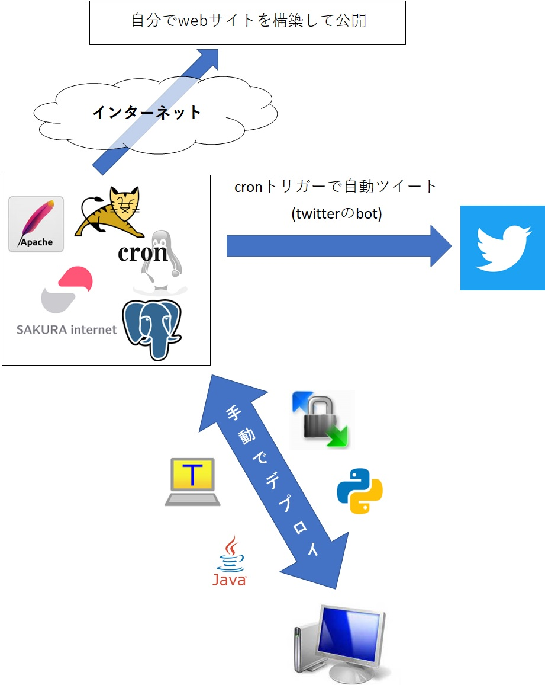
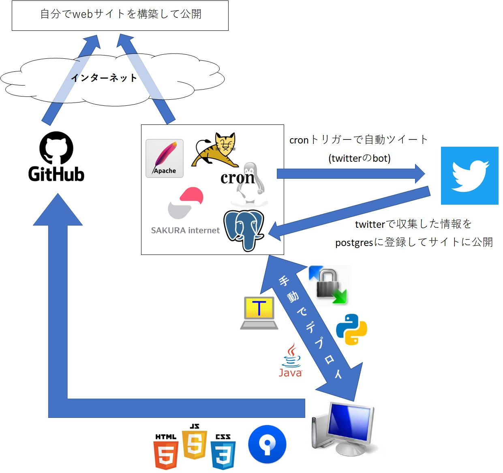
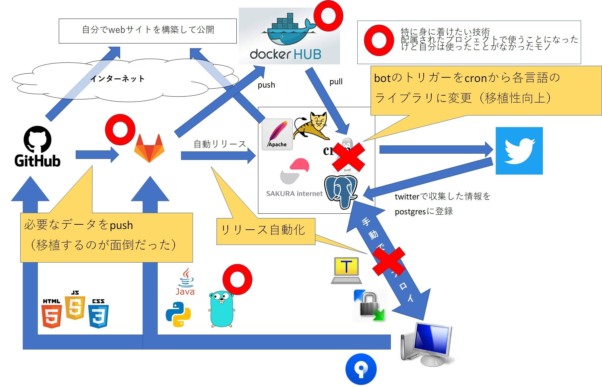
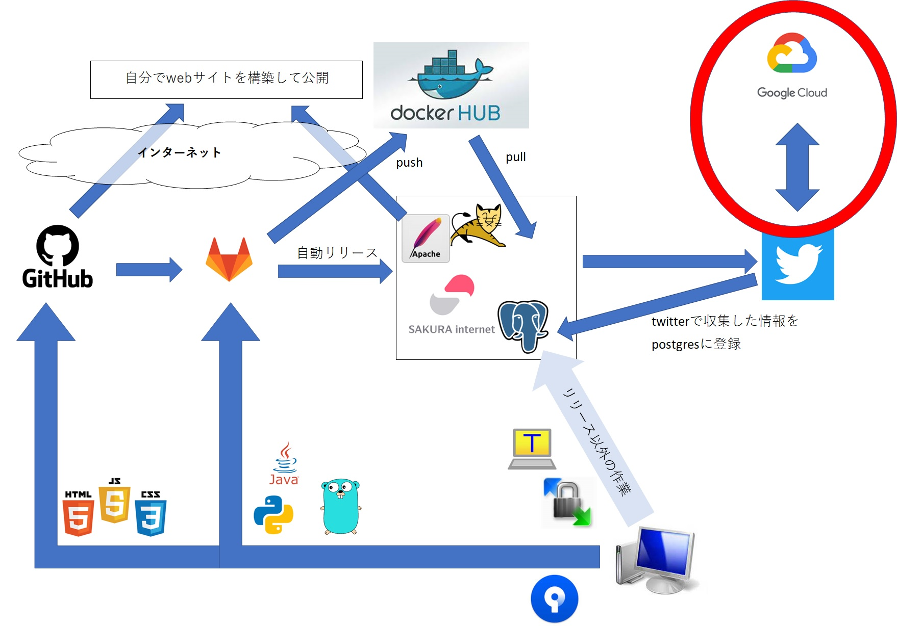

個人開発したことまとめ
Tweetホーム > 個人開発したことまとめ
はじめに
このページは、2020年頃から私が個人的に開発して今実際に稼働しているモノについて、どういう仕組みで動いているのか、構築するにあたってどういう壁にぶつかってどうやって解消したのかを整理したページです。
初期構築時
当時（2020年ぐらい）課題に思っていたこと。
- Javaで業務ロジックを書いたことはあるけど、ゼロからシステムを構築した経験がない（MWなど色々準備された状態からのシステム開発がほとんどだった）
- インフラ周りに超苦手意識があった（linux？cron？？コマンドもよくわかんないよ？？）
自力でイチからシステムを構築する経験をしてみたい。
やったこと・作ったモノ

- サクラインターネットというサービスでlinuxのサーバーをレンタル（月額600円ぐらい～）
- apache, tomcat, postgresをインストール
- ローカルでJavaで開発したアプリケーションをデプロイして公開
- pythonで作ったプログラムをcronで動かしてtwitterのbotを作成
作ったもの詳細
二次
- フロントも弱い(html, css, JavaScript)
- twitterから情報収集したものをDBに登録してwebに公開とかしてみたい
やったこと・作ったモノ

作ったもの詳細
現状
- 2021年7月から配属されたプロジェクトで、これまで触ったことがない技術がいっぱい。ヤヴァイ。
やったこと・作ったモノ

- Gitlab, Go, Dockerなど触れたことのない技術を習得しないといけないのでそれを使ったものに変更
- Docker入れるとなるとサーバーのスペックがちょっと心もとないので月額600円⇒800円に増強()
作ったもの詳細
今やろうとしてる
- GCPも使っているのでそこをもっと習得していきたい
やりたいこと・作りたいモノ

- Gitlab, Go, Dockerなど触れたことのない技術を習得しないといけないのでそれを使ったものに変更